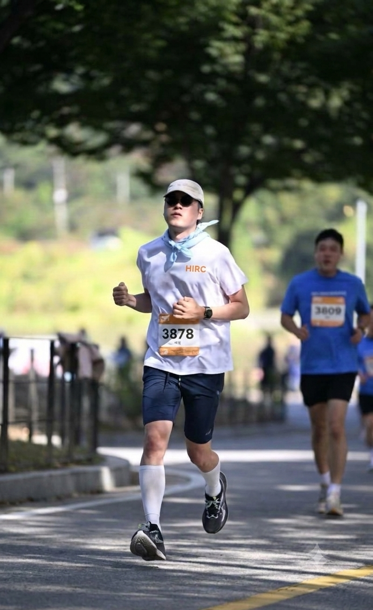
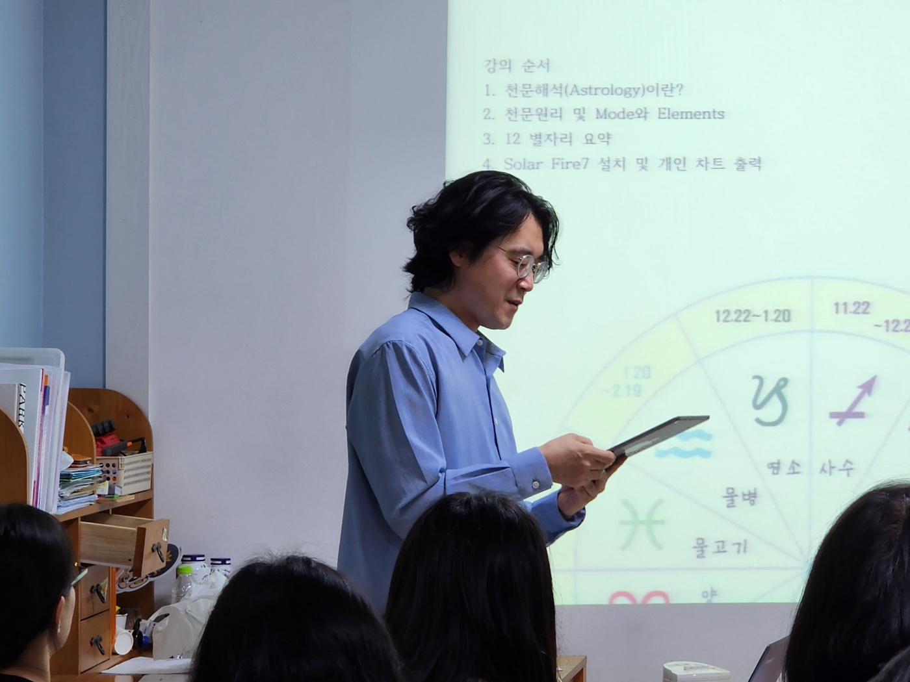
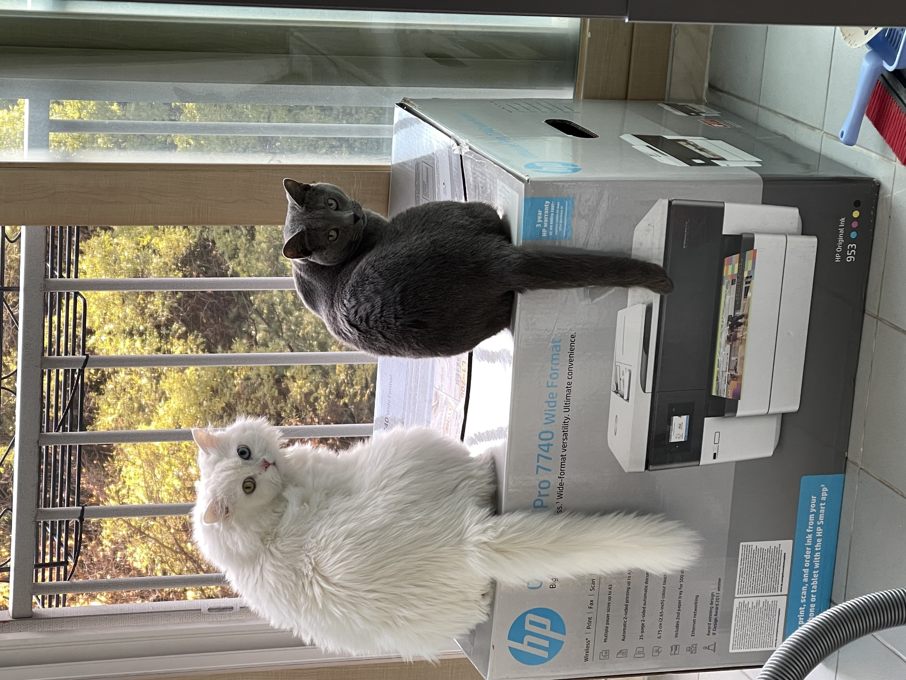
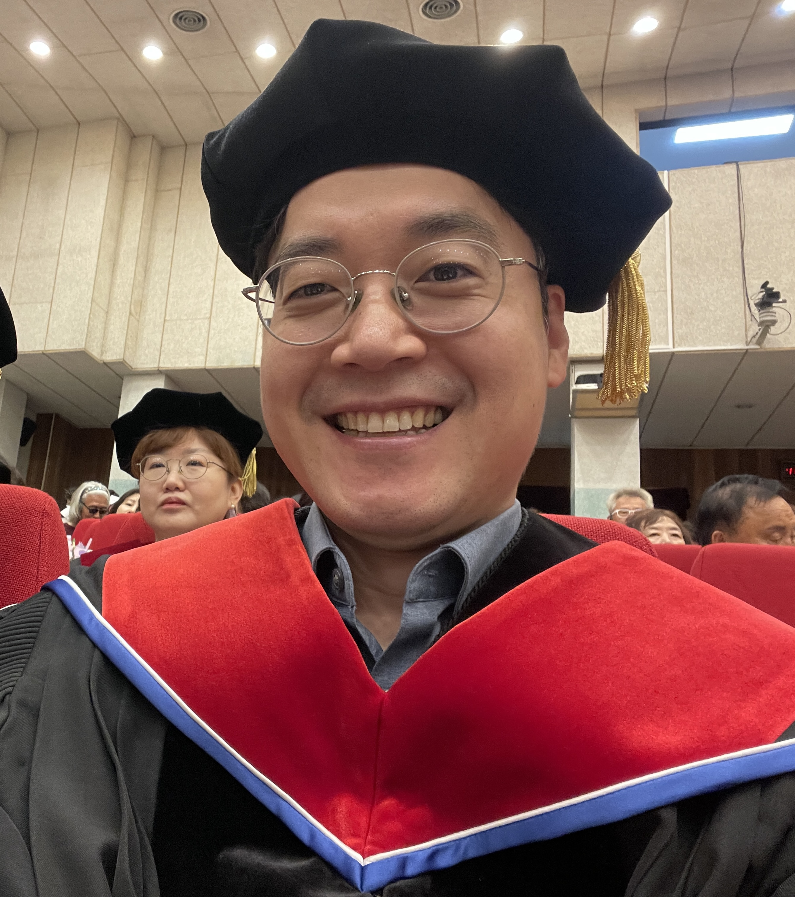

목회자 소개
Rev. Ji-Ho Shin, Ph.D.




신지호 목사 Rev. Ji-Ho Shin, Ph.D.
- • 한국기독교장로회 (PROK)
- • 한신대학교 신학과 및 신학대학원 (M.Div.)
- • 평택대학교 피어선신학전문대학원 상담학 박사 (Ph.D.)
- • 연구분야 : 반려동물 상실 경험과 반려인의 핵심감정 (질적연구·내러티브 탐구)
- • 사역관심 : 실존적 예수 제자도, 우주적 질서(Astrologia), 뜻 중심 상담(TCC)
자발적 화답
이 나눔이 당신의 여정에 실질적인 울림과 배움이 되었다면, 얻으신 가치만큼의 자발적인 화답을 보내주셔도 좋습니다.
은혜교회는 의무나 강요가 아닌 온전한 자유로움 속에서 건네는 화답을 소중히 여깁니다. 건강한 상호작용은 내면의 질서와 균형을 세우고, 서로의 배움과 돌봄이 이어지게 하는 힘이 됩니다.
계좌안내
농협은행
351-1131-7719-83
예금주 · 한국기독교장로회 은혜교회
오시는 길
원주시 무실동 위너스빌딩 501호
주소 및 위치
• 주소 : 강원특별자치도 원주시 능라동길 37, 위너스빌딩 5층 501호
* 무실동 상업지구 메인 스트리트에 위치해 있으며, 1층 엘리베이터를 이용하여 5층으로 올라오시면 됩니다.
모임 일시 및 참여 안내
• 일요 모임 : 매주 일요일 오전 11:00 (1부 명상 예식 & 2부 열린 식탁 교제)
• 문의 : lightnlovejh@gmail.com